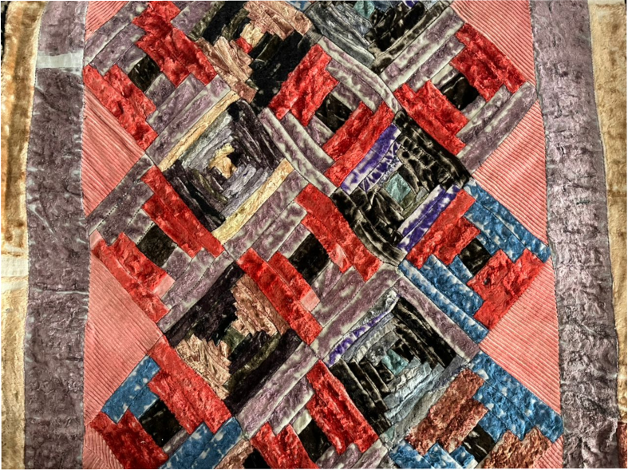

{% extends 'main/base.html' %}
{% block title %}
about
{% endblock %}
{% block content %}

"Курак, который я знал и дорог мне, шили из тех небольших отрезков тканей, что раздавали женщинам на похоронах в память об умершем человеке. "Жыртыш" - так называли ту традицию, обычно это куски разорванной разноцветной ткани, размером в носовой платок, из бархата или вельвета. Откуда я знаю все эти подробности, очень просто, в эти жыртыши клали горсть моих любимых сладостей: орехи, несколько штук кураги, изюм и пару конфет, а ещё иголку с катушкой ниток.
По заказу Фонда Сороса мы, художник Эмиль Тилеков, фотограф Эркин Болжуров и я, изготовили настенный календарь "Курак". В поисках лоскутных одеял, объездили почти все северные регионы Кыргызстана, а когда по пути заехали ко мне домой, на мое удивление, среди многочисленных одеял мы обнаружили два великолепных маминых творения и только тогда я открыл для себя ее курак. Она их шила, как бы между прочим, в свободное время от множества её забот. Словно сама жизнь, как вдохновение. Сейчас смотришь и диву даешься: гармоничное сочетание различных цветовых и геометрических решений в этой сакральной мозаике. Они стали украшением нашего календаря, являясь частью неповторимого образца народного искусства.
По принципу курака снят Бешкемпир, и я его называю "лоскутным одеялом моего детства", когда каждый кадр, как лоскутки и каждая сцена, как узор содержит в себе сакральную память о родных людях и мгновениях далёкой близкой жизни..."
{% endblock %}